This page is a guide to learning the piece Fratres by Arvo Pärt on a tapping Instrument such as the Chapman Stick or the acoustic Dragonfly DFA.
There is a ♪ score/tablature ♪ and fretboard diagrams to help you learn the song.
This guide is constructed from the original 1977 version of the piece.
The piece is built entirely on 13 triads (chords) along with an interlude triad called the refuge'.
The triads are organized as a kind of ascending scale-of-triads like so:
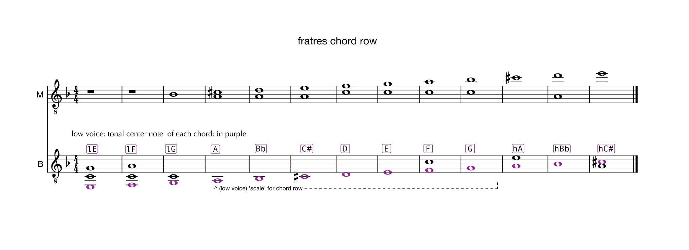
The piece has a series 6 variations that are played one by one on each of the 13 triads. A variation series is made up of a base triad There are versions of the piece that don't use all 13
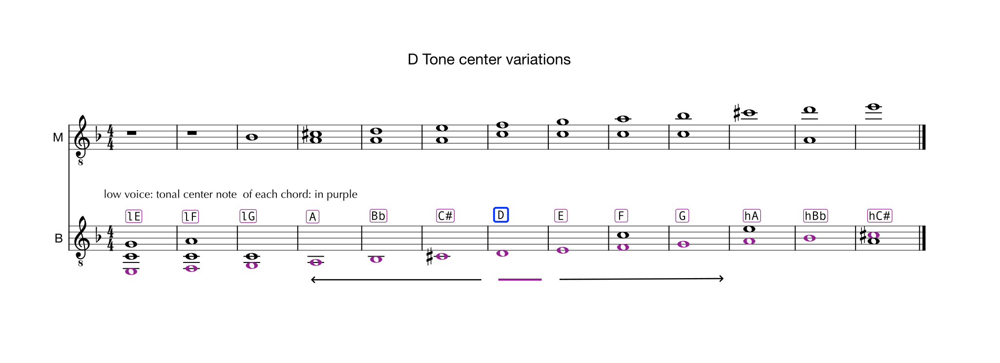
